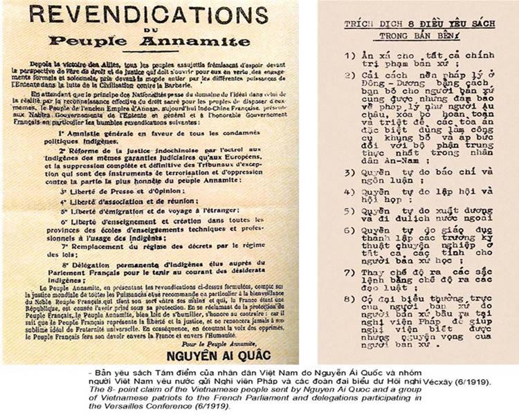
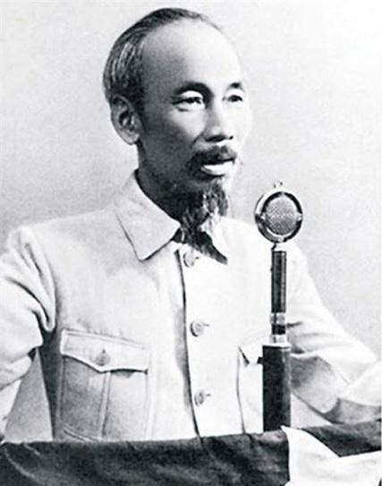
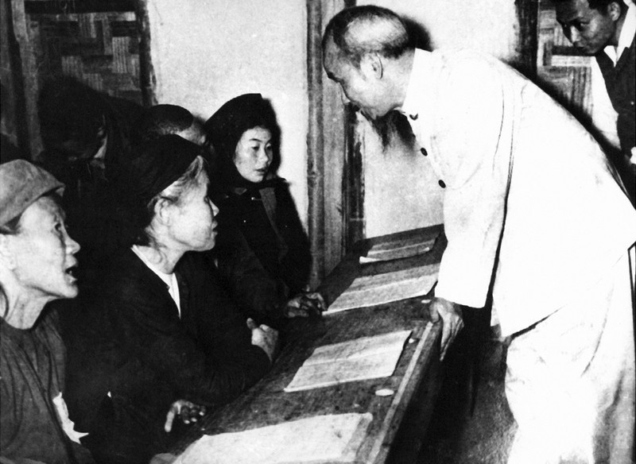
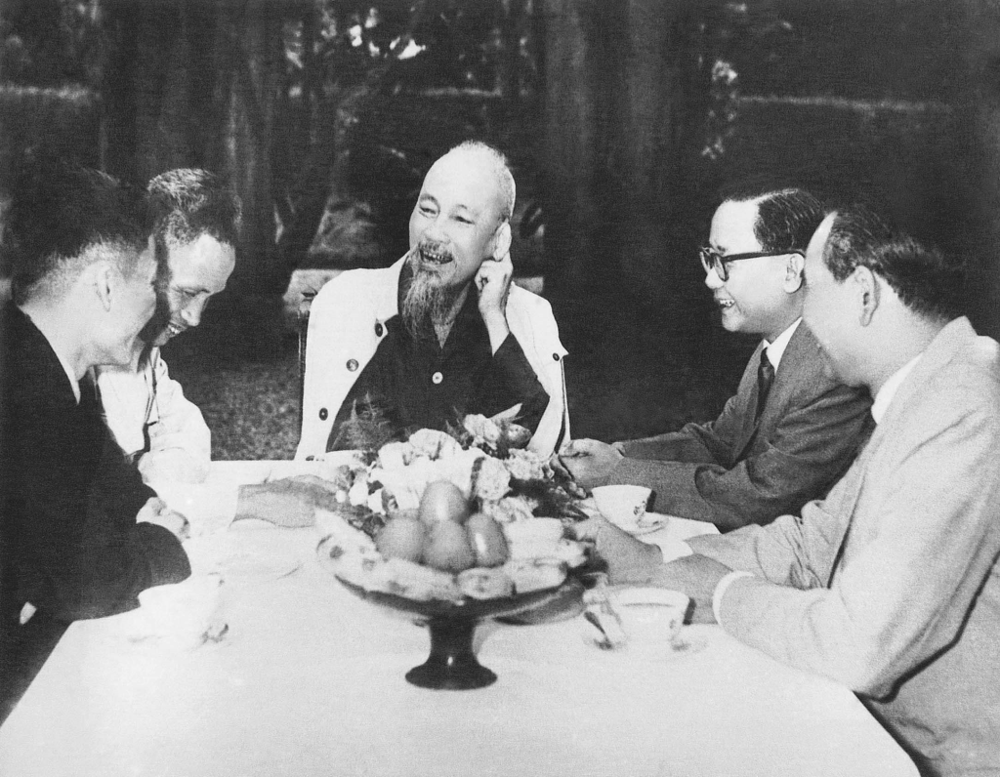
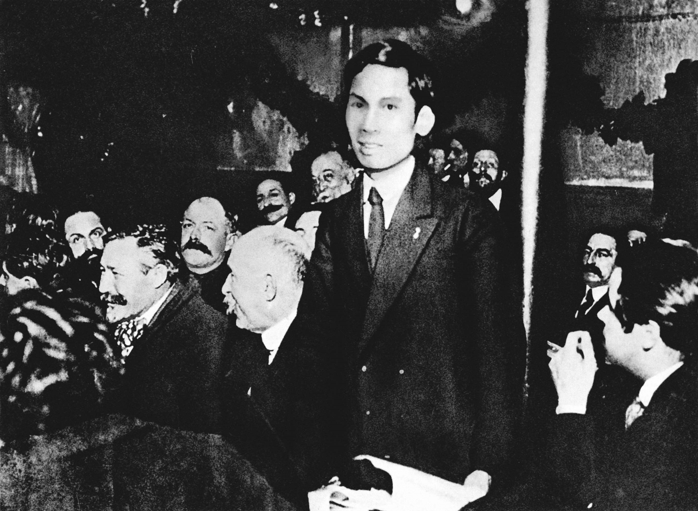
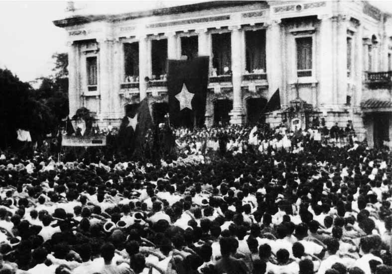
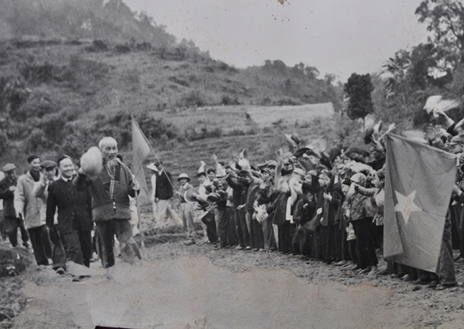
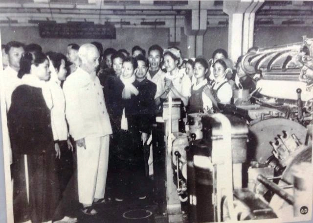

Độc lập dân tộc
Bốn luận điểm: quyền thiêng liêng; độc lập gắn tự do, hạnh phúc; độc lập thật sự; thống nhất và toàn vẹn lãnh thổ.

Thuyết trình · Chương 3
|
Bốn luận điểm: quyền thiêng liêng; độc lập gắn tự do, hạnh phúc; độc lập thật sự; thống nhất và toàn vẹn lãnh thổ.
Năm luận điểm về con đường cách mạng vô sản, Đảng lãnh đạo, đại đoàn kết, chủ động sáng tạo và bạo lực cách mạng.
Quan niệm, tính tất yếu và các đặc trưng cơ bản của xã hội xã hội chủ nghĩa trong tư tưởng Hồ Chí Minh.
Mục tiêu và động lực xây dựng chủ nghĩa xã hội ở Việt Nam, trong đó con người và quyền làm chủ của nhân dân giữ vị trí trung tâm.
Trả lời câu hỏi trọng tâm về chủ nghĩa xã hội và chuyển sang phần minigame củng cố nội dung.
Nguyễn Ái Quốc đòi quyền bình đẳng pháp lý và các quyền tự do, dân chủ cho nhân dân An Nam.

“Làm cho nước Nam được hoàn toàn độc lập” trở thành mục tiêu chính trị rõ ràng của cách mạng.
Khẳng định Việt Nam có quyền hưởng tự do, độc lập và sự thật đã thành một nước tự do, độc lập.
“Thà hy sinh tất cả” chứ nhất định không chịu mất nước, không chịu làm nô lệ.
Độc lập, tự do không chỉ là mục tiêu của Việt Nam mà còn là quyền thiêng liêng của các dân tộc trên thế giới.


Theo Hồ Chí Minh, giành độc lập chưa phải mục tiêu cuối cùng. Giá trị của độc lập phải được đo bằng đời sống thực tế của nhân dân.
Một quốc gia chỉ thật sự độc lập khi có đầy đủ quyền tự quyết về chính trị, ngoại giao, quốc phòng, tài chính và con đường phát triển của mình.
Quyền tổ chức và điều hành nhà nước thuộc về dân tộc.
Quyền lập pháp và đại diện chính trị không bị áp đặt từ bên ngoài.
Có năng lực bảo vệ chủ quyền và an ninh quốc gia.
Có nền tài chính độc lập để tự quyết định phát triển đất nước.
Độc lập dân tộc không thể tách rời thống nhất đất nước. Trong Di chúc, Người tiếp tục khẳng định niềm tin: Tổ quốc nhất định thống nhất, đồng bào Nam Bắc nhất định sum họp một nhà.


Phong trào yêu nước thất bại, cách mạng khủng hoảng về đường lối và lực lượng lãnh đạo.
Cách mạng Tháng Mười Nga mở ra khả năng giải phóng dân tộc theo con đường mới.
Hồ Chí Minh đọc Luận cương của Lênin và tìm thấy con đường cứu nước.
Giải phóng dân tộc gắn với giải phóng giai cấp, độc lập dân tộc gắn với chủ nghĩa xã hội.
Vận động và tổ chức dân chúng.
Nhân tố quyết định thắng lợi của cách mạng giải phóng dân tộc.
Liên lạc với các dân tộc bị áp bức và giai cấp vô sản mọi nơi.
Đội tiên phong của giai cấp công nhân, nhân dân lao động và dân tộc Việt Nam.
“Đảng có vững cách mệnh mới thành công.”
Cách mạng là việc chung của cả dân chúng. Muốn thắng lợi phải tập hợp toàn dân, trong đó liên minh công - nông là nền tảng.
Bị xem như phần đi sau và chờ thắng lợi từ trung tâm tư bản.
Cách mạng thuộc địa có thể chủ động, sáng tạo và giành thắng lợi trước.
Thắng lợi đến từ sự nỗ lực, tổ chức và sức mạnh của nhân dân Việt Nam.

Làm cho nhân dân thoát khỏi bần cùng, có công ăn việc làm, được ấm no, hạnh phúc; nói ngắn gọn là dân giàu, nước mạnh.
Sau khi đánh đổ đế quốc và phong kiến, chỉ có CNXH mới đem lại tự do, bình đẳng, bác ái thật sự cho nhân dân.
Còn tồn tại vết tích xã hội cũ, nhưng hướng tới lực lượng sản xuất phát triển cao, tư liệu sản xuất chung và xóa bỏ bóc lột.
Xã hội có chế độ dân chủ; nhân dân là chủ, quyền lực thuộc về nhân dân và phục vụ nhân dân.
Lực lượng sản xuất phát triển cao, từng bước xây dựng quan hệ sản xuất tiến bộ và xóa bỏ bóc lột.
Văn hóa, đạo đức và quan hệ xã hội phát triển; con người được tôn trọng, bình đẳng và có điều kiện phát triển.
Chủ nghĩa xã hội là công trình tập thể của nhân dân dưới sự lãnh đạo của Đảng Cộng sản.


“Chế độ ta là chế độ dân chủ.
Tức là nhân dân làm chủ.”— Hồ Chí Minh
Xây dựng chế độ dân chủ; nhân dân là chủ và thực sự làm chủ. Quyền lực thuộc về nhân dân.
Xây dựng nền kinh tế phát triển cao, với công nghiệp và nông nghiệp hiện đại, khoa học - kỹ thuật tiên tiến; không ngừng nâng cao đời sống nhân dân.
Hiện đại · Phát triển · Đời sốngXây dựng nền văn hóa mang tính dân tộc, khoa học, đại chúng; phát triển con người và tiếp thu tinh hoa văn hóa nhân loại.
Dân tộc · Khoa học · Đại chúngXây dựng xã hội dân chủ, công bằng, văn minh; quan hệ giữa người với người tốt đẹp, đời sống vật chất và tinh thần ngày càng được nâng cao.
Dân chủ · Công bằng · Văn minh“Muốn xây dựng chủ nghĩa xã hội,
trước hết cần có những
con người xã hội chủ nghĩa.”— Hồ Chí Minh


Hồ Chí Minh nhìn nhận động lực xây dựng chủ nghĩa xã hội như một hệ thống; trong đó con người giữ vai trò trung tâm.
“Việc gì có lợi cho dân phải hết sức làm,
việc gì có hại cho dân phải hết sức tránh.”— Hồ Chí Minh
Chăm lo lợi ích chính đáng của nhân dân và kết hợp hài hòa lợi ích cá nhân, tập thể, xã hội.
Lợi ích chính đángPhát huy quyền làm chủ để khơi dậy sáng kiến, năng lực và sức sáng tạo của nhân dân.
Quyền làm chủTạo điều kiện để mỗi người phát huy tài năng, sáng kiến và năng lực; kết hợp hài hòa lợi ích cá nhân với lợi ích chung.
Tài năng · Sáng kiếnTập hợp và phát huy sức mạnh của mọi tầng lớp nhân dân thành sức mạnh chung trong xây dựng chủ nghĩa xã hội.
Sức mạnh toàn dânĐảng, Nhà nước và các tổ chức chính trị - xã hội có vai trò tổ chức, tập hợp và phát huy sức mạnh của nhân dân.
Là cơ sở, tiền đề để dân tộc làm chủ vận mệnh của mình, lựa chọn con đường phát triển và tiến lên chủ nghĩa xã hội.
Là điều kiện để bảo đảm nền độc lập dân tộc vững chắc, tạo cơ sở kinh tế, chính trị, xã hội và quốc phòng để bảo vệ thành quả độc lập lâu dài.
Giữ vững vai trò lãnh đạo của Đảng Cộng sản trong toàn bộ tiến trình cách mạng.
Củng cố khối đại đoàn kết toàn dân, trên nền tảng liên minh công nhân - nông dân - trí thức.
Gắn đoàn kết dân tộc với đoàn kết quốc tế, kết hợp nội lực của dân tộc với những điều kiện thuận lợi của thời đại.

Chủ nghĩa xã hội là mục đích để xây dựng đất nước trong thời kỳ mới, đồng thời cũng là công cụ để đi đến xây dựng thành công chủ nghĩa cộng sản.
Xây dựng chủ nghĩa xã hội là định hướng phát triển đất nước sau độc lập: dân giàu, nước mạnh, dân chủ, công bằng, văn minh.
“Xã hội xã hội chủ nghĩa mà nhân dân ta xây dựng là một xã hội: Dân giàu, nước mạnh, dân chủ, công bằng, văn minh.”
Chủ nghĩa xã hội là giai đoạn đầu, tạo cơ sở để tiến lên xây dựng chủ nghĩa cộng sản.
“Làm tư sản dân quyền cách mạng và thổ địa cách mạng để đi tới xã hội cộng sản.”